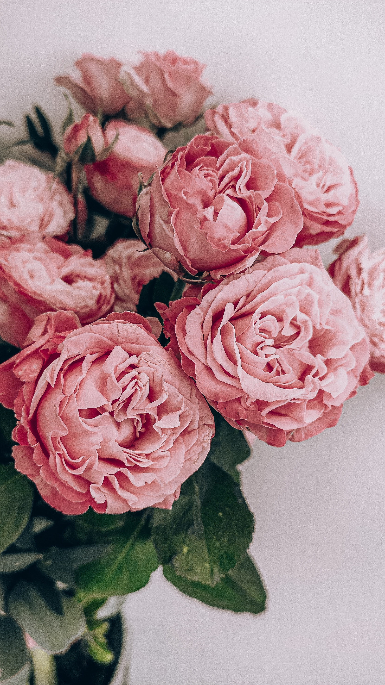
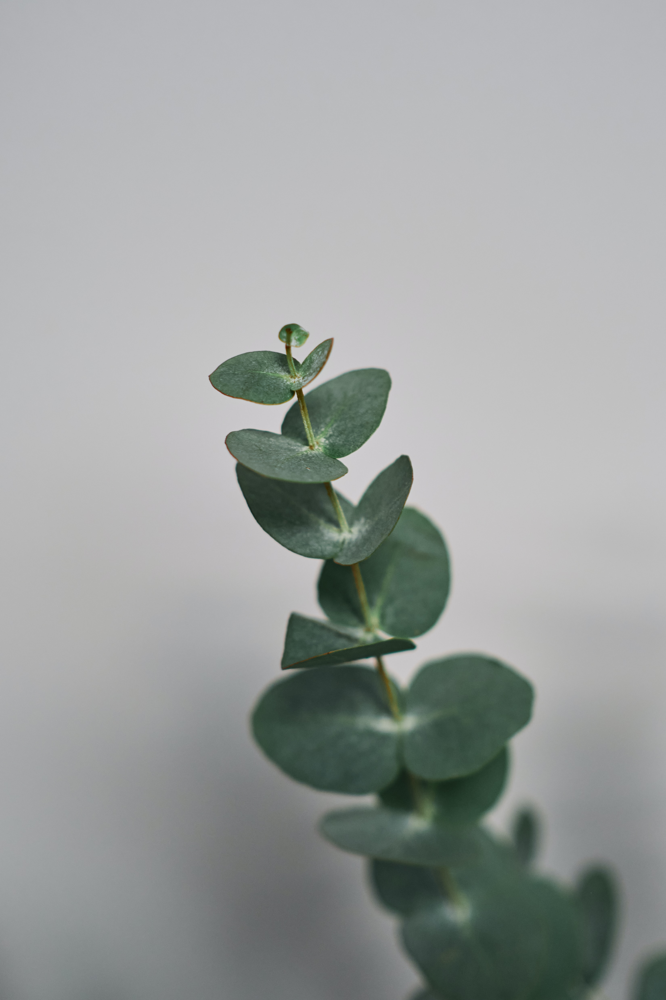
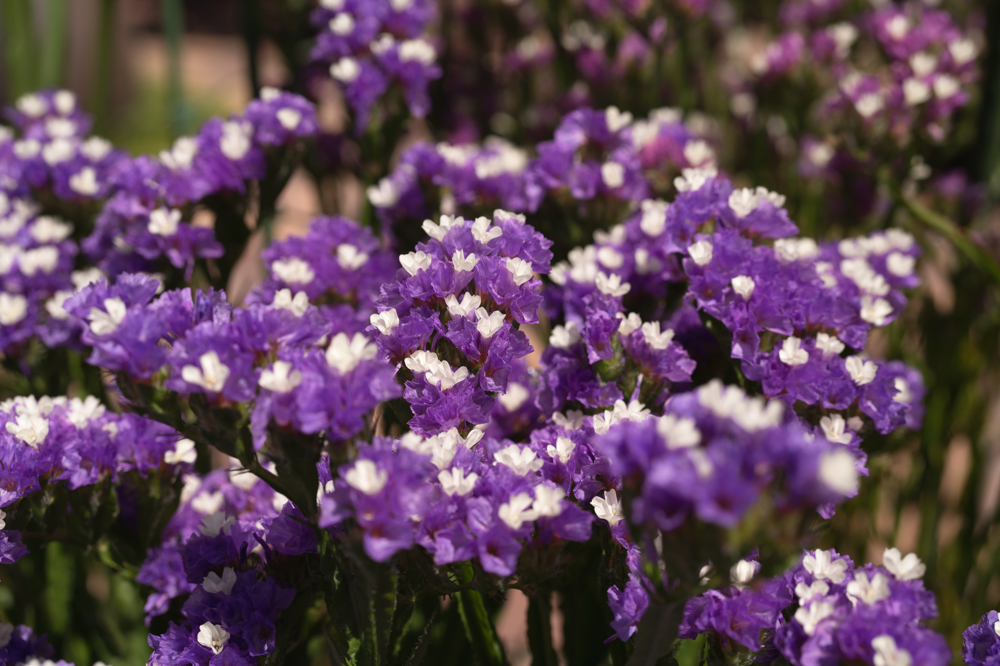
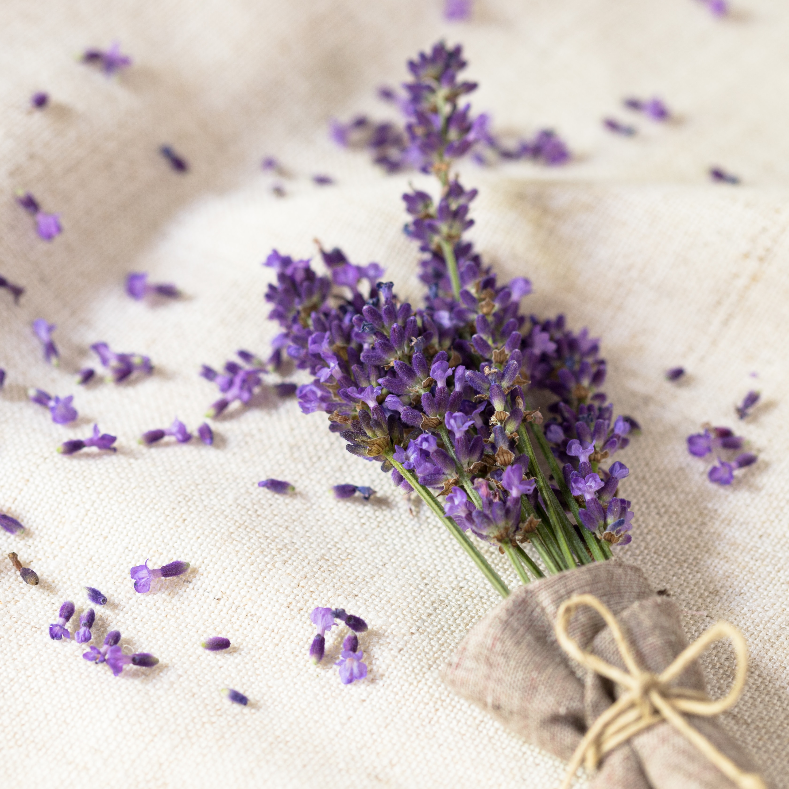
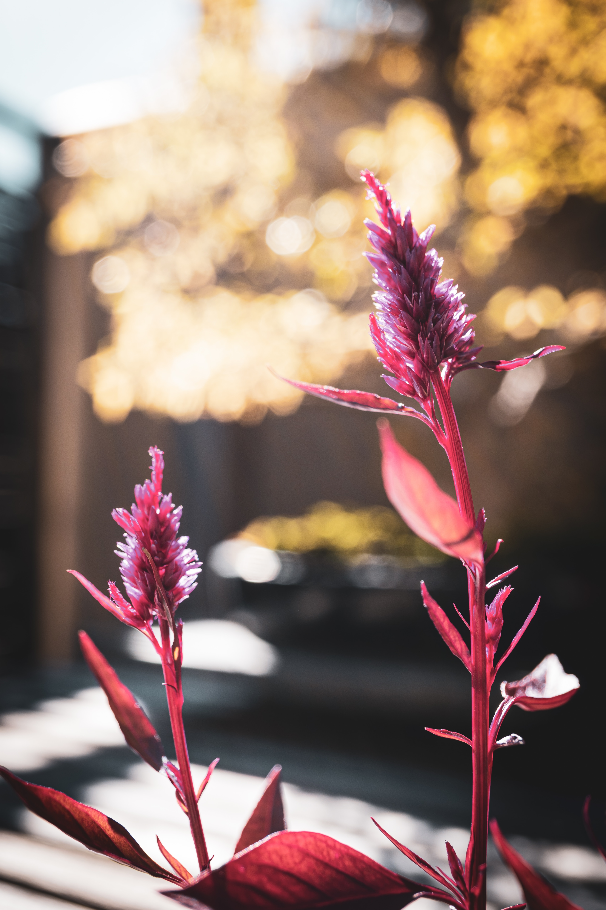

5 Stunning Dried Flowers To Add Beauty To Your Home
Posted by: Yammiilletthh - Uploaded on: November 03, 2023
Keeping fresh flowers in your home can get expensive and they often end up dying or not looking good after a few days. Some flowers can easily be dried and preserved, so you can have beautiful flowers in your home without any upkeep. The flowers in this list are easy to find and preserve well.
Roses
Roses are a popular cut flower to give a loved one or someone special. They come in a wide variety of colors and are appropriate for nearly every occasion. Even though the leaves are delicate, they dry very easily and will last a long time. Their timeless beauty is easily preserved for years.
Eucalyptus
 Though not a flower, Eucalyptus leaves are a very popular choice for dried greenery. They have a fresh fragrance and unique appearance. The gray-green leaves dry easily and will maintain their shape. You can use the branches to create wreaths for decoration, or for creating potpourri or scented sachets.Statice
The light and papery petals of Statice flowers are vibrant colors and can be preserved extremely easily. You'll find them in a wide range of colors including pink, purple, yellow, and blue. If you're new to drying flowers, these are a great option to start with.
Lavender
Lavender is known for its fragrant purple flowers that have a calming effect. This flower preserves well and can be used ornamentally as well as for aromatic and therapeutic purposes. Cut a small bunch of flowers and tie them together. Then hang them upside-down in a well-ventilated area. Once they're dried, Lavender flowers retain their fragrance and can be used in a variety of ways.
Celosia
A great dried flower to combine with Lavender is Celosia, also known as Cockscomb. This plant has long springs of bright pink, orange, or yellow flowers that maintain their shape and color when dried. Similar to other flowers, you can dry these by cutting off a group of stems and hanging them upside-down in a dry area with ventilation. They work well for dried floral arrangements and craft projects.
How to Air Dry Flowers
Air drying is also known simply as hanging the bouquet upside down. This method for how to dry flowers is best for entire bouquets or robust flowers such as roses, lavender, strawflower, baby's breath, statice, celosia, gomphrena and thistle.
- Strip excess foliage from flowers.
- Cut stems to the desired length, but leave at least 6 inches.
- Use a rubber band or twine to tie the stems together (if you have a bouquet).
- Hang them upside down in a dark, dry, well-ventilated area. Keeping the flowers out of direct sunlight will help them retain their color.
- The drying process will take about two to three weeks.
- Once dried, take down the flowers and spray with unscented hairspray for protection.
Tips For Drying Flawers
- Tip: Dried flowers fade quickly in sunlight or extreme heat. Keep them in cool areas away from windows.
- Tip: For Press Flowers Heavy books like dictionaries work best.
- Tip: Do not place your Composition of dried flowers In very damp rooms such as the bathroom, the laundry room or the kitchen. Any type of humidity in the air will humidify the petals and leaves, making them mold.
More on Dried Flowers
One of the reason is, dried flowers can symbolize some of your most treasured moments. Their presence can bring back positive feelings from long ago. However, in order to preserve that special memory, the reverse needs to occur.
Second reason, if well cared dried flowers can last on average between 2 – 3 years. It is best to keep dried flowers out of direct sunlight and avoid humid conditions. So, if you want to know how long specifically, the quick answer for how long do dried flowers last is 1–4 years depending on their type and your home.
Due to their long life span, dried flowers can an ideal gift for anyone. who wants to gaze on their arrangement for weeks and months afterward.
Seasonally grown, naturally dried and preserved flowers can be a much more sustainable and environmentally friendly alternative to fresh flowers in the winter months. Indeed, in some situations, they can have key benefits over fresh flowers all year round.